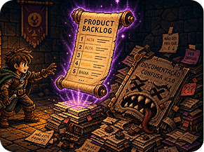

Em breve
Projetos em destaque
SOBRE MIM
Entre design e desenvolvimento.
Sou estudante de Desenvolvimento de Software Multiplataforma na FATEC Jacareí e formado em Design de Produto.
Minha trajetória começou no design, passando por UX/UI, motion design, ilustração e projetos para marcas. Hoje, amplio essa experiência através do desenvolvimento de software, unindo pensamento visual, experiência do usuário e tecnologia na construção de produtos digitais.


SKILLS
Design
Front-end
Back-end
Ferramentas
Minha experiência combina desenvolvimento e design, permitindo transitar entre a concepção visual de uma solução e sua implementação.
HTML
CSS
JavaScript
Node.js
PostgreSQL
Git
Docker
Figma
UX/UI
Desenvolvimento de Software Multiplataforma
FATEC Jacareí
Design de Produto
Anhembi Morumbi
Trilha UX Design
Programa Desenvolve · Grupo Boticário
Formação Figma & UX Design
Alura
Processo criativo
Do primeiro rascunho ao código.
01
Esboço
Ideias começam no papel, explorando possibilidades, referências e diferentes caminhos para a solução.
Scrum Dungeon

Sobre o projeto
Scrum Dungeon é uma plataforma gamificada desenvolvida para tornar o aprendizado da metodologia Scrum mais interativo e envolvente, utilizando elementos de RPG e progressão ao longo da experiência.
Minha contribuição
Atuei como Product Owner, sendo responsável pela comunicação com o cliente, organização do Product Backlog e definição das prioridades do projeto.
Também participei do desenvolvimento da aplicação em diferentes etapas, desde a prototipação, definição dos fluxos de tela e criação da identidade visual até a implementação do front-end.
No back-end, contribuí com a arquitetura e organização do projeto em camadas e módulos, além do desenvolvimento de funcionalidades como o sistema de progressão, mapa e lógica de jogo.


Tecnologias
HTML · CSS · JavaScript · EJS · Node.js · Express · PostgreSQL · Figma
Arquitetura e desenvolvimento
Renderização com EJS, lógica de negócio centralizada no servidor, banco de dados PostgreSQL com DDL/DML explícitos e fluxo de versionamento baseado em Git Flow com Pull Requests.